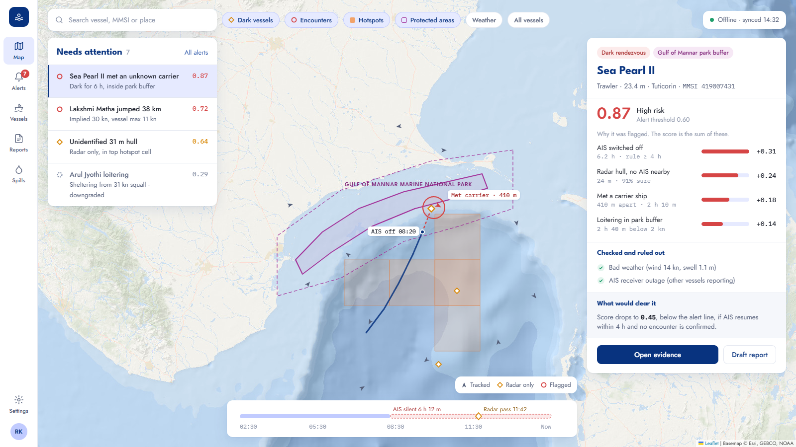

SamudraSense predicts where oceans are at risk, catches vessels that hide, and turns evidence into reports an officer can sign. It runs offline on a single workstation.

of the extra heat from global warming goes into the ocean, pushing fish into new waters.
IPCC AR6of fish may be caught illegally every year, worth up to US$23 billion.
FAO, upper estimateof industrial fishing vessels are not publicly tracked.
Nature, 2024An officer can't board a boat because a model said 0.87. SamudraSense shows exactly what added up to the score, what it ruled out, and where every number came from.
Each behaviour adds points. No hidden weights.
Storms and receiver outages are checked and shown.
A report can't be signed while any number is unlinked.